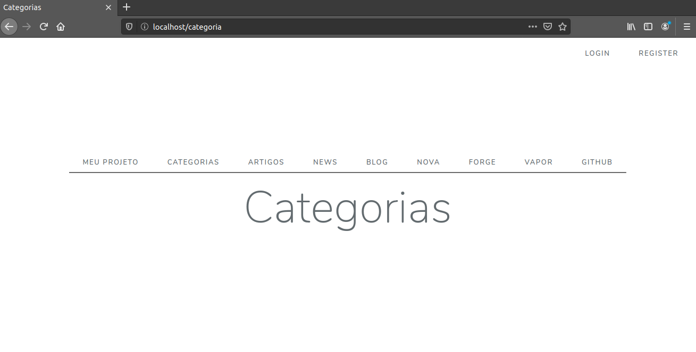
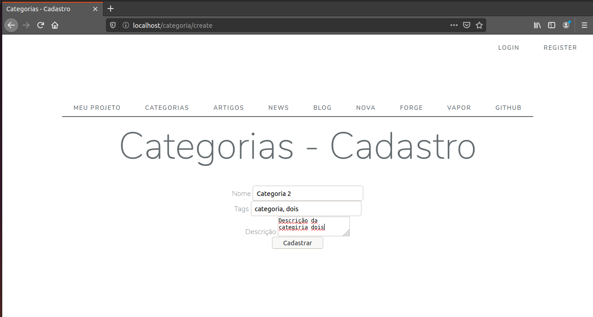
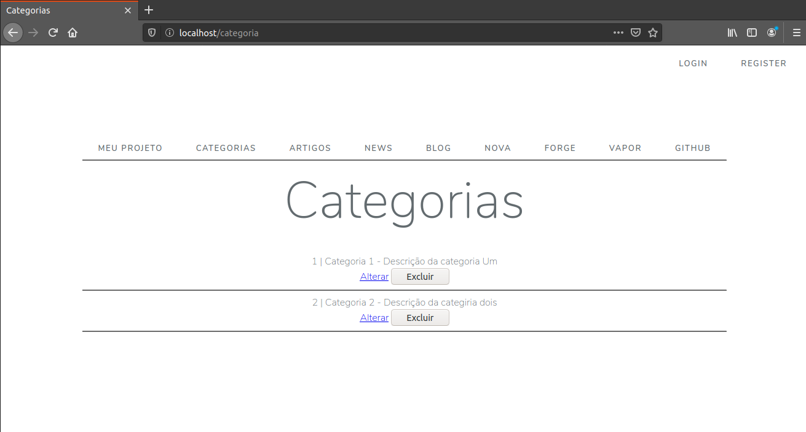
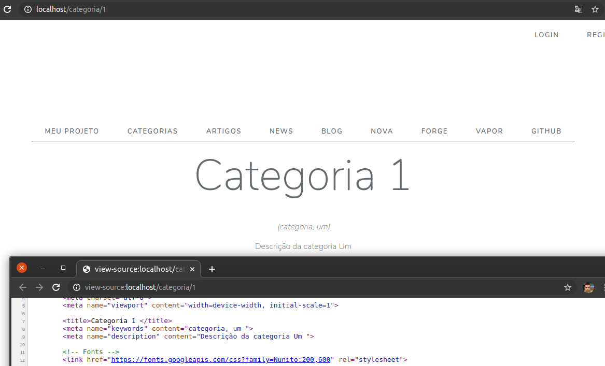
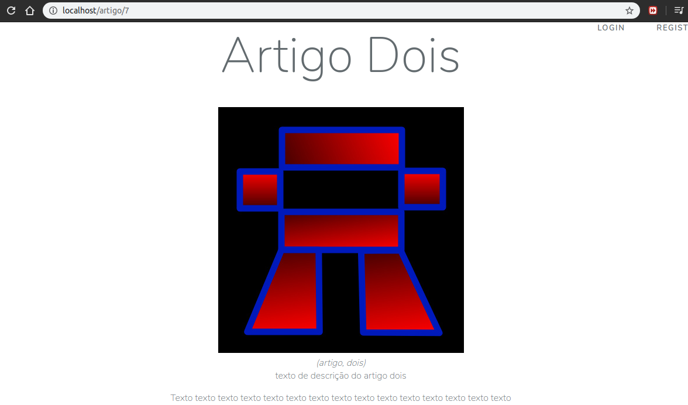

Vamos criar as telas de listagem, cadastro, alteração e exibição das controllers Categoria e Artigo.
Para organizar melhor nosso código vamos criar dentro de resources/views pastas com o nome do controller a que as views pertencerão.
Teremos então nossas views de Catgoria dentro de resources/views/categoria, e as views de Artigo em resources/views/artigo.
Começando pela Categoria, iremos criar o arquivo index.blade.php, implementar o titulo e fazer um loop para exibir a lista de registros:
{{ csrf_field() }} inclui um campo oculto no formulário de exclusão, inclusão ou alteração. É um mecanismo de segurança do laravel para não aceitar formulários submetidos de outras fontes.
Para chamar nossa tela vamos até a controller Categoria (App/Http/Controllers/CategoriaController.php)e criamos a função index, e dentro dela retornamos nossa view index:
E o clicar no link categoria a rota localhost/categoria nos leva ao nosso método index da controller Categoria, este lista todas as categorias cadastradas no banco e envia para a view categoria/index que as exibe:

Sim eu sei, não está aparecendo nada aí, e isso é simples de resolver, vamos agora criar o...
A view que conterá nosso formulário de cadasro será chamada pelo método create da controlle Categoria, então, assim como criamos a view index.blade.php e à chamamos no método index, criaremos a view create.blade.php para colocar nosso formulário.
Claro, vocẽ pode criar com o nome que desejar, estou fazendo desta forma para organizar o código de forma que cada função chame a view de mesmo nome.
Criamos na pasta resources/views/categoria o arquivo create.blade.php e dentro dele colocaremos um simples formulário de cadastro e importaremos o template:
No Controller Categoria, vamos programar a função create para mostrar nossa view e a função store para salvá-la:
Aqui o método store setado no action do formulário envia os dados para a função store, por sua vez ela tenta salvar no banco.
Caso tudo ocorra bem o método redireciona para a view index com uma mensagem de sucesso. Caso haja algum problema ou o formulário não passe pela validação (middleware) ele redireciona devolta ao formulário e apresenta uma mensagem de erro.
Neste ponto já temos o formulário funcionando em http://localhost/categoria/create

E também já está salvando no banco!

Agora criaremos o formulário de alteração, que será acessado pela rota http://localhost/categoria/id_da_categoria/edit sendo id_da_categoria o numero que representa o id do registro no banco de dados.
Para facilitar criaremos uma cópia da view create e salvaremos como edit.blade.php, e adicionamos ao value dos campos os valores do registro.
Outro detalhe importante é que o action do formulário de edição aponta para update e precisa ter também o id do registro que será editado:
De volta ao CategoriaController, vamos programar as funções edit (responsável por mostrar o formulário de edição) e update (responsável por armazenar as mudanças no banco):
Aqui o método edit busca no banco o registro relacionado a id e fornece os dados para a view, que por sua vez preenche os campos no formulário.
O método update recebe os dados e salva as alterações dos dados relacionados ao id.
É a função do controller responsável por mostrar os dados de um registro específico definido pelo id.
Ao acessarmos a página http://localhost/categoria/1 (sendo 1 o id do registro) somos direcionados para o método show que recupera o id passado por parâmetro, busca o registro no banco e exibe na view.
Vamos definir uma view chamada show.blade.php de forma simples, apenas para mostrar os dados do registro:
(Aproveitamos para trabalhar nosso SEO adicionando keywords e description à página)
E para mostrar os dados vamos adicionar apenas duas linhas em nosso método show na controller:
E ao acessar o endereço http://localhost/categoria/1 nos é exibido tudo sobre a categoria de id 1 como você pode ver abaixo.
Observe também que as tags keywords e description já são modificadas automaticamente no código fonte, isso ja traz uma melhora significativa para o SEO desta página!

Basicamente vamos fazer a mesma coisa para os artigos, mas além de mais campos, tempos uma verificação a mais para fazer, a verificação de categria.
Isso porque todo artigo vai estar relacionado a uma categoria, afinal não queremos um blog bagunçado. Logo, para cada cadastro temos que disponibilizar a lista de categorias para o usuário escolher, e temos que validar também ao salvar no banco para evitar que usuários mal intencionados modifiquem o html e submetam um artigo vinculado a uma categoria que não existe.
No mais, os passos são exatamente os mesmos feitos até agora.
Primeiro criamos a pasta artigo dentro de resources/views.
Dentro dela, iremos criar o arquivo index.blade.php e basicamente fazer a mesma implementação que fizemos acima na view index da pasta categoria:
Aqui adicionei também o link "ver" que redireciona para o show. Você pode fazer isto também em categorias caso queira.
Para chamar nossa tela vamos até a controller Artigo e, na função index retornamos nossa view index:
E ao clicar no link ARTIGOS a rota localhost/artigo nos leva ao nosso método index da controller Artigo, este lista todos os artigos cadastradas no banco e envia para a view artigo/index que as exibe, exatamente como fizemos no passo anterior com Categorias.
A view que conterá nosso formulário de cadasro será chamada pelo método create da controlle Artigo, então criaremos a view create.blade.php para colocar nosso formulário.
Aqui teremos uma estrutura parecida com o cadastro de categorias, porém o cadastro de artigos terá o select Categoria, responsável por listar as categorias cadastradas no banco para que o usuário
selecione a categoria a qual quer vincular o artigo.
Importante: Você deve ter reparado que nossa tabela artigo possui um campo image. Este campo armazenará o endereço de uma imagem upada no momento do cadastro do artigo, e a imagem será exibida quando um usuário acessar a página do artigo.
A imagem portanto será pública, mas o laravel por padrão salva os uploads em uma pasta não-pública, a store, criado uma certa dificuldade para exibirmos a mesma.
Então, antes de criar o script de upload da imagem, vamos acessar o arquivo config/filesystems.php, ele salva algumas configurações, dentre elas a Default Filesystem Disk, que por padrão possui o valor
que iremos alterar para
fazendo com que os arquivos sejam salvos em storage/app/public, facilitando nosso trabalho quando precisarmos exibir o arquivo.
Problema: a pasta publica do projeto, ou /public na raiz do projeto não é a mesma de storage/app/public, que é onde os arquivos upados ficarão.
Solução: criaremos um link simbólico para a pasta storage/app/public em /public, será como se os arquivos na primeira pasta estivessem dentro da segunda.
Para isso acesse via terminal o bash do laravel, dentro dele acesse a pasta do projeto, dentro dela execute:
Criamos agora na pasta resources/views/categoria o arquivo create.blade.php e dentro dele colocaremos um simples formulário de cadastro e importaremos o template:
Note também que criamos o campo image, que receberá uma imagem que será como uma capa para o artigo, logo teremos que implementar mais a frente na controller a validação desse upload de arquivo.
Devolta ao controller, temos um problema a resolver, a controller Artigo não tem acesso aos dados da tabela Categoria, e ela precisará deste acesso para listar na tela de cadastro nossas categorias.
Para resolver, no início da controller Artigo adicionamos a model Categoria:
Agora podemos programar a função create para listar as categorias e mostrar nossa view:
E a função store, agora responsável por verificar se a categoria selecionáda é válida, fazer o upload da imagem e salvar o registro:
Aqui o método store setado no action do formulário envia os dados para a função store, por sua vez ela tenta salvar no banco.
Caso tudo ocorra bem o método redireciona para a view index com uma mensagem de sucesso. Caso haja algum problema ou o formulário não passe pela validação ele redireciona devolta ao formulário e apresenta uma mensagem de erro.
Em nossa index temos uma lista de artigos com um link (ver) que, quando clicamos somos direcionados para a página daquele artigo, algo como http://localhost/artigo/1 (sendo 1 o id do registro).
O que faremos agora é criar a view show. Na verdade ela será muito parecida com a show que criamos para a categoria, só que também mostrará a imagem (image) do artigo.
Vamos definir uma view chamada show.blade.php na pasta artigo com o seguinte script:
E para mostrar os dados vamos adicionar apenas duas linhas em nosso método show na controller:
E ao acessar o endereço http://localhost/artigo/1 nos é exibido tudo sobre o artigo de id 1 (ou seja lá qual for o artigo selecionado)
incluindo a imagem como capa do artigo!

Levando em conta o que você aprendeu sobre upload de arquivos e também sobre o processo de alteração na parte de categoria, crie a view de edição para o artigo incluindo a opção de alterar a foto de capa.
Você deverá programar também os métodos edit e update do ArtigoController para efetuar as modificações.
Lembre-se também que a view de edição, assim como a de cadastro, deverá ter um select para que a categoria também possa ser alterada se o usuário assim desejar,
e que o select deverá trazer já selecionada a ategoria à qual pertence o artigo.